DHCP Deployment with Custom VNet Integration in VMWare
Executive Summary
This project demonstrates the implementation of a hybrid lab environment for CloudTech, where end
devices
dynamically obtain IP addresses from a centralized Windows Server DHCP hosted on a separate
virtual machine. The setup was achieved using VMware
Workstation's Custom VMnet5 to create an internal network that bridges both VMs securely.
Topology Reference
Network Topology of CloudTech
Details
Setting Up The Custom Vnet (VMNet5)
The custom VNet acts as the physical link between the two Virtual Machines (Windows Server with
DHCP role and EVE-NG which has the routers,
switches and end devices). We will use the 192.168.50.0/24 network for this bridge.
Configure VMnet5: In VMware's Virtual Network Editor, create a new, dedicated
Host-Only virtual network (VMnet5).
Disable the built-in DHCP service for this VNet.
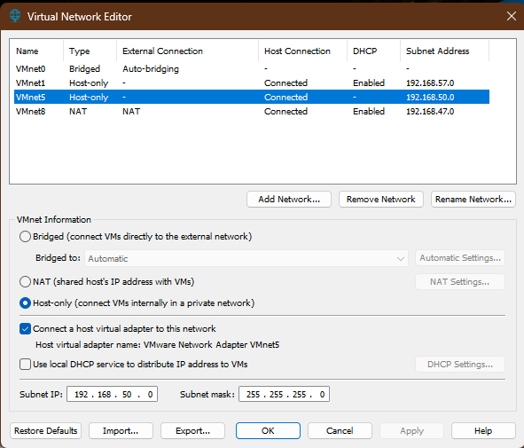
VMware Virtual Network Editor
Assign Server IP: Add a network adapter to the Windows Server VM and connect it
to VMnet5. Configure the adapter with the static IP address: 192.168.50.5/24.
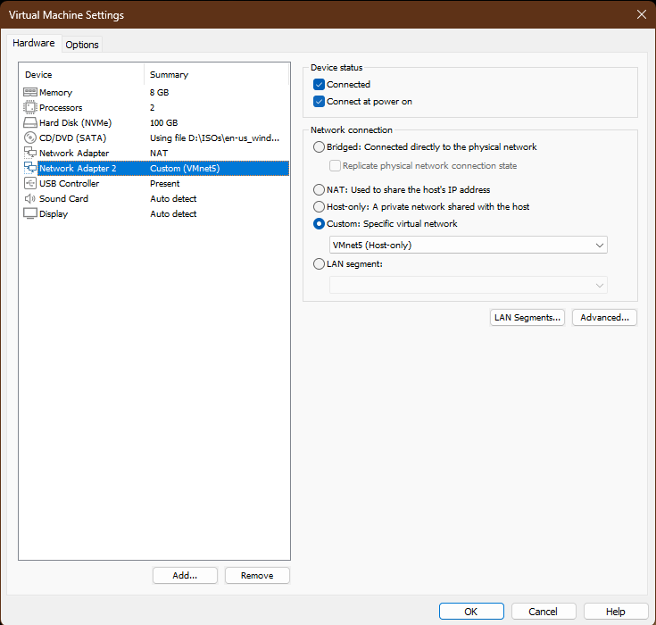
Select Custom: Specific virtual network - VMnet5 (Host-Only)
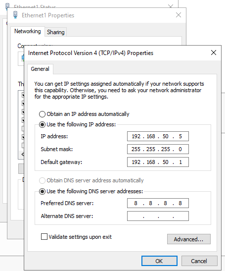
Assign Static IP to Windows Server
Add a network adapter to the EVE-NG VM and connect it to VMnet5. We will assign router
R0's
g0/0 interface with ip 192.168.50.1/24.
Configure DHCP Scopes on Windows Server
The Windows Server must be configured with scopes for all four client subnets in the diagram.
The
"Router" option in each scope must match the corresponding router interface IP
as seen below.
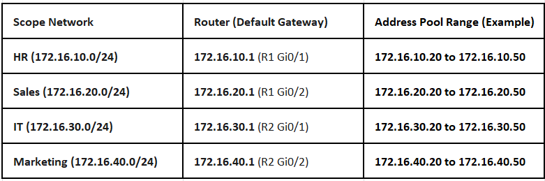
DHCP Scopes to be assigned
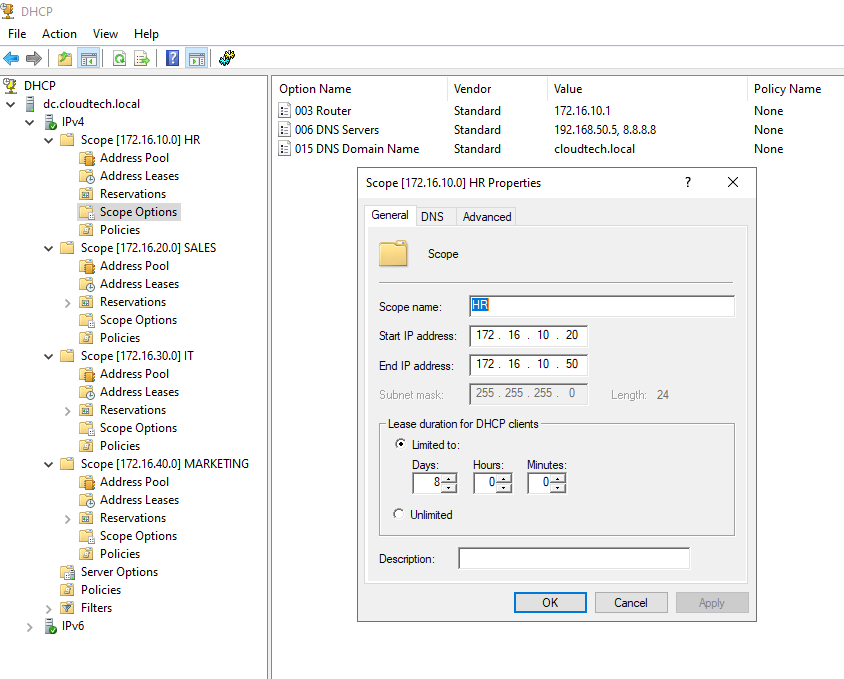
HR scope configured on Windows Server
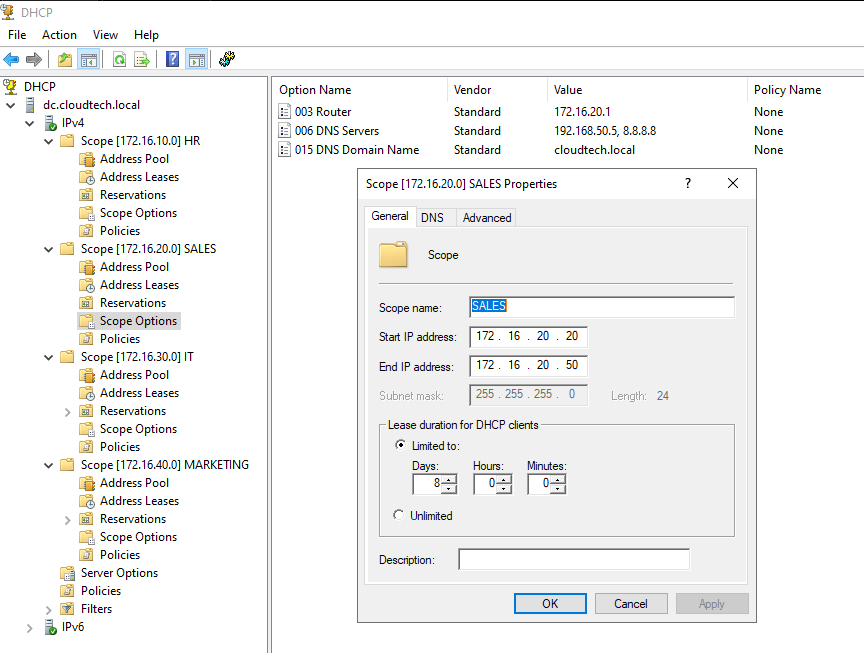
SALES scope configured on Windows Server
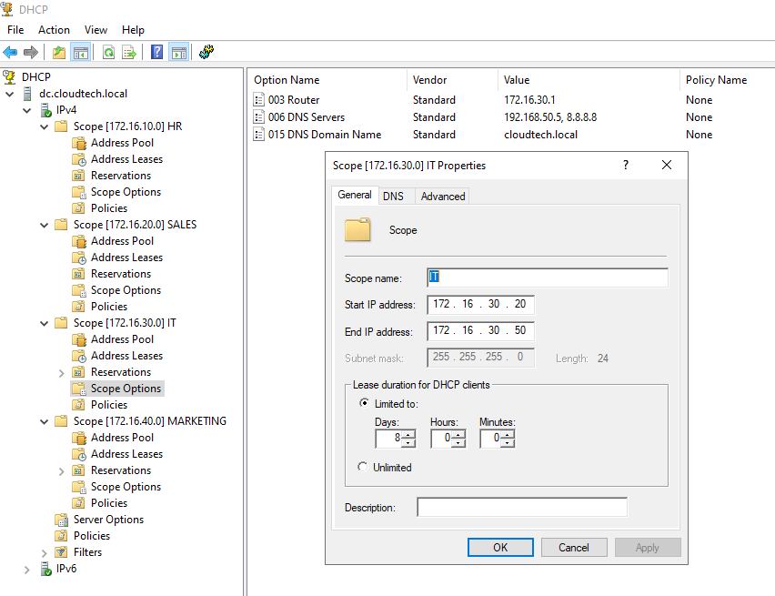
IT scope configured on Windows Server
Marketing scope configured on Windows Server
Topology Build and Configuration
Before we can test DHCP, the routers need to know the path to the Windows Server. We start by
physically connecting the EVE-NG lab to the external VMnet5 network as seen in the topology.
Then, to make the entire network function seamlessly, we will configure OSPF. This protocol
will
handle the complex route discovery process, ensuring that every router
automatically learns how to reach the DHCP Server and all client subnets. Configuring OSPF
directly on the interface is a modern, explicit approach that prevents accidental
advertisement of unintended networks.
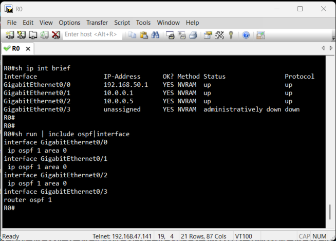
Configuration for R0
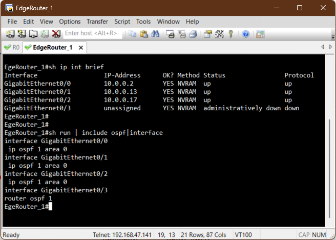
Configuration for EdgeRouter_1
Configuration for EdgeRouter_2
Configuration for R1 with DHCP Relay
Configuration for R2 with DHCP Relay
Verification of Routes
Before a client can successfully get an IP address, we must confirm that the access routers
R1
and R2 know the path back to the external Windows DHCP Server.
Since we enabled OSPF on all interfaces, this should be automatic. We use the show ip
route command on the Access Routers to verify that the path to the DHCP server's
network
and other routers are
present in the routing table.
Routes on R1
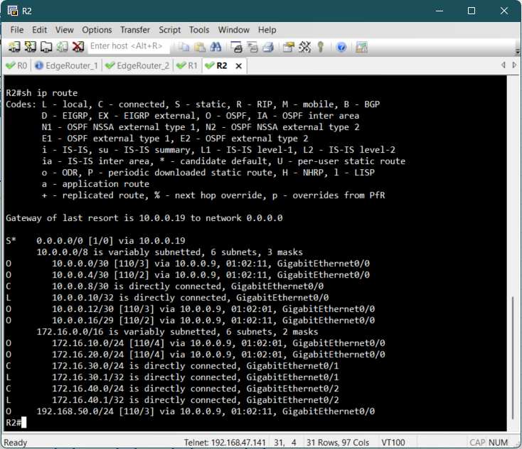
Routes on R2
Verification of Client IP Assignment
With the DHCP Scopes configured on the Windows Server, the DHCP Relay enabled on R1 and R2
and
the OSPF routes confirmed, the final step is to test the
dynamic IP address assignment from the perspective of an end-user device.
To trigger the DHCP process on a client PC, access the console for one of the end devices and
execute the ip dhcp command to send a DHCP request.
Upon successful execution, the client should display an output confirming that an IP address
has
been acquired from the remote DHCP server.
The client should receive an IP address in its respective subnet and should be able to ping
other PCs in the different subnets.
DHCP on HR PC
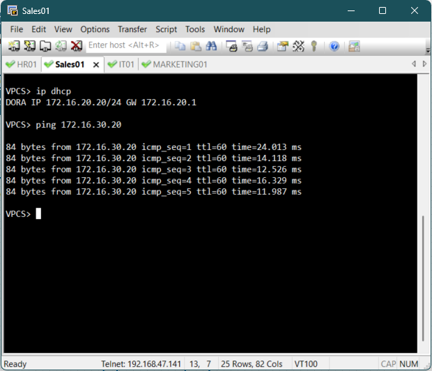
DHCP on Sales PC
DHCP on IT PC
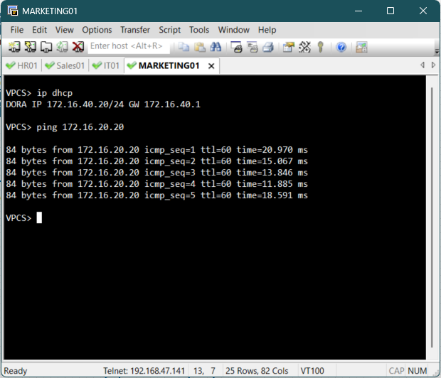
DHCP on Marketing PC
Verification of Address Leases
To confirm that the external Windows Server is actively managing the IPs for the simulated
lab,
we can inspect the address leases directly in the DHCP Management Console.
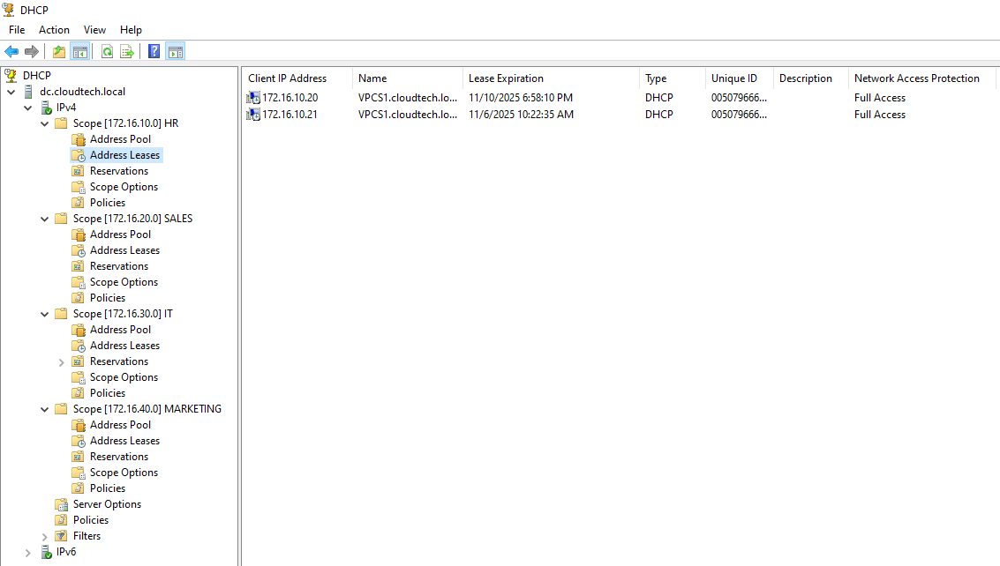
Address leases on HR scope
Address leases on Sales scope
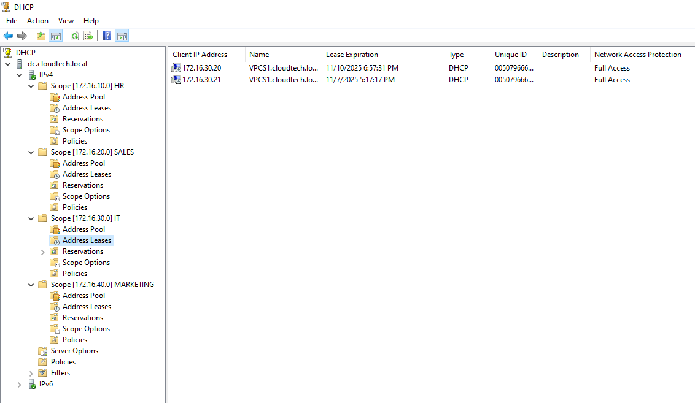
Address leases on IT scope
Address leases on Marketing scope
Conclusion
This project successfully implemented a robust hybrid network solution, validating key skills
in
virtualization and network services.
By integrating a Windows Server DHCP service across a dedicated VMware Custom VNet
and a
complex EVE-NG topology,
we achieved centralized IP management. Core accomplishments included configuring Layer 3
DHCP
Relay on access routers
R1 and R2, deploying OSPF dynamic routing for full reachability, and leveraging the
VNet
bridge for network isolation.
This centralized design enhances security and auditing by eliminating rogue DHCP risks and
demonstrates proficiency in building and securing scalable enterprise infrastructure.